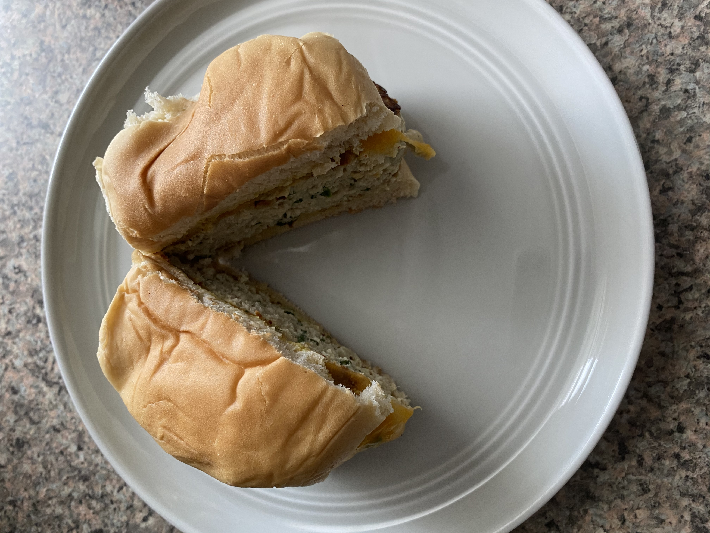

Sometimes there is nothing I want more than a burger. This burger recipe is delicious but is also a healthy alternative
to the popular beef option. The lean ground turkey paired with fresh onion and spinach creates a perfect marriage of health and flavor.
- 1 lb of turkey (lean, ground)
- 1 egg
- 1/4 cup bread crumbs
- 1/2 tsp salt
- 1 tsp pepper
- 2 tsp worcestershire sauce
- 2 tsp spicy brown mustard
- minced onion (as much or as little as you want
- chopped arugula/spinach (as much or as little as you want)
- Combine and form into patties.
- Cook on stovetop until cooked through.
- Top with cheese until melted, remove from the stove.
- Serve on whole wheat bun with spicy brown mustard, sliced tomato, and sliced avocado.